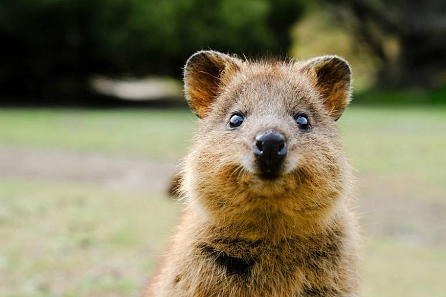
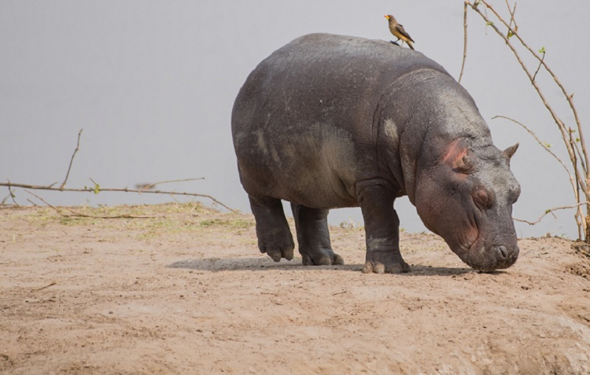
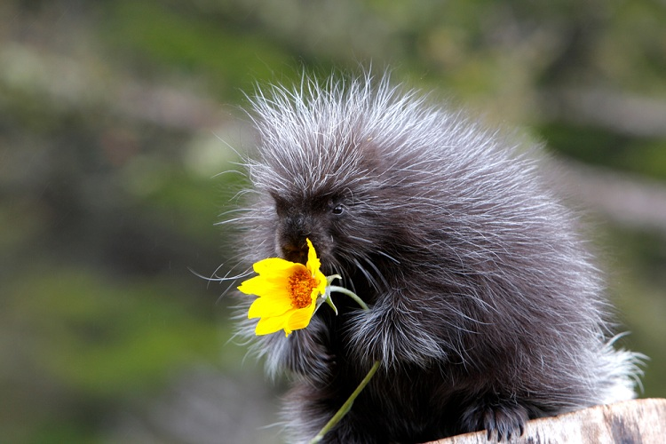
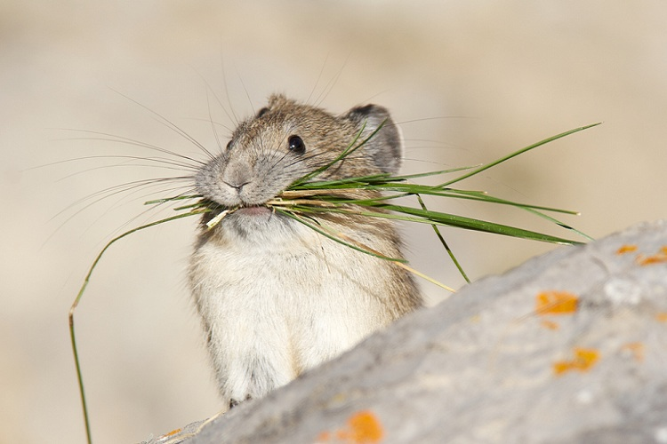
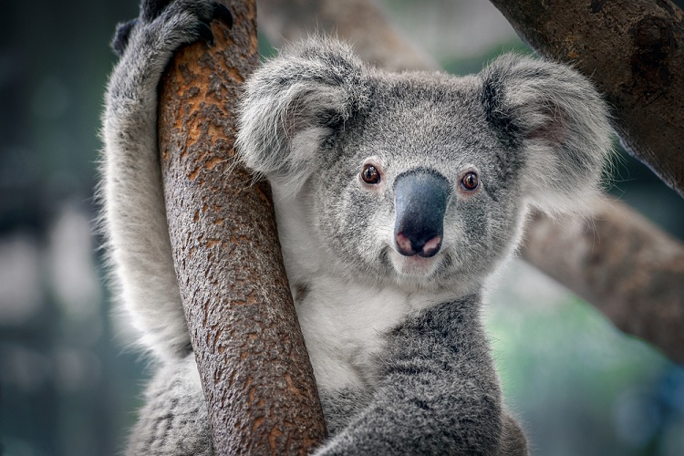
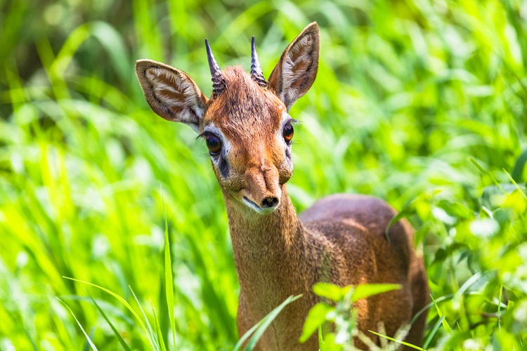
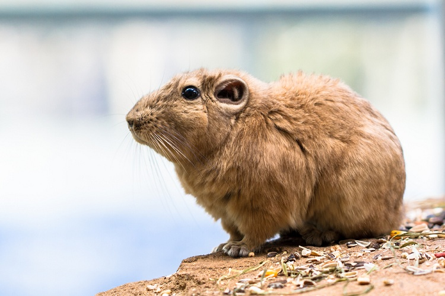
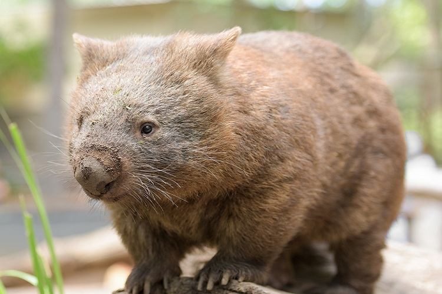

Самые очаровательные животные-веганы
Квокка или короткохвостый кенгуру

Пожалуй, самое улыбчивое животное! Зверек вырастает размером с кошку, а весит максимум 5 кг. При этом у млекопитающего есть сумка, в которой оно носит детенышей. Питаются квокки исключительно растениями: травой, листьями, побегами и плодами деревьев. Мощные задние лапы, как у всех кенгуровых, позволяют им легко забираться на высоту до полутора метров. Вот только драться, как большой кенгуру, квокка не умеет, к тому же у зверька 32 мелких зуба и нет клыков. Раньше в местах обитания этих милых зверьков (в Австралии) не было хищников, которые охотились бы на них, но когда люди завезли кошек и собак, малыши стали легкой добычей. Теперь квокки можно встретить только на нескольких островах у побережья зеленого континента. Именно там сделаны все эти забавные селфи с улыбчивыми зверятами, заставившие весь мир умиляться.
Карликовый бегемот

Как и его единственный собрат, обыкновенный бегемот, кроха половину времени проводит в воде, но в отличие от него, не объединяется в стада, а живет поодиночке. Малыши-бегемоты — веганы, к тому же очень мирные: самцы при встрече не конфликтуют, а расходятся по-хорошему. Любопытный факт: пот у этих животных розовый. Железы выделяют особый секрет — цветную слизь, которая служит «солнцезащитным кремом». Мини-гиппопотамы обитают в заболоченных долинах рек Либерии, Сьерра-Леона и Кот д'Ивуара. К сожалению, вид на грани вымирания, так как местные жители бесконтрольно истребляют этих милых существ для употребления в пищу. В природе осталось всего около тысячи особей.
Американские древесные дикобразы

Этот зверек — забавная миниатюрная копия настоящих дикобразов — весит максимум 18 кг. Он и колючий, и пушистый одновременно: тело покрыто волосами и острыми иголками длиной 2,5-11 см. При этом у него длинные когти и 20 зубов. Малыши-дикобразы живут в густых лесах Северной и Южной Америки, отлично лазают по деревьям. Их «дома» обычно располагаются в дуплах или у корней, но они могут поселиться и в расщелинах скал или пещерах. Кушают кору, ягоды и от яблочка не откажутся. Живут они поодиночке или парами, но совсем недолго – около трех лет.
Пищухи

Они получили свое название из-за звуков, которые издают, общаясь друг с другом. Это небольшие животные, которые похожи на хомяков, но на самом деле являются близкими родственниками зайцев. Пищухи питаются травами, листьями кустарников, мхами и лишайниками, а на зиму запасают сено, за что их также называют сеноставками. Маленькие веганы собирают свежую траву, и складывают ее в кучу, пока высохнет. Чтобы траву не разносило ветром, они накрывают ее камушками. Как только трава подсохнет, они несут ее на хранение в норку. В основном пищухи живут семейными группами и разделяют обязанности по сбору пищи и наблюдением за опасностями. Зверьки обитают в Азии, Северной Америки, несколько видов можно встретить в степях России.
Коала

Еще один очаровательный веган, причем, моносыроед. Эти сумчатые, которые там умиляют нас, едят исключительно побеги и листья эвкалипта, и то только 120 видов растения из 800, существующих в природе. Однако иногда, чтобы восполнить нехватку некоторых минеральных веществ, коалы едят землю. Коалы спокойные, весьма флегматические зверьки. Они ведут размеренную отшельническую жизнь в лесах Австралии. Весьма любопытно, что у коал есть уникальные узоры на подушках пальцев, как у человека и некоторых обезьян.
Дикдик

Это миниатюрные антилопы, живущие в саваннах и полупустынях центральной и восточной Африки (от Намибии до Сомали). Милаши весом не больше 6 кг и ростом не выше 40 см. Дикдики — абсолютно травоядные животные, которые любят селиться поближе к зарослям кустарников. Кроме того, дикдики – верные семьянины. Пары живут вместе всю жизнь, заботятся о потомстве и охраняют друг друга. Измены в их семьях – большая редкость.
Гунди

Небольшой грызун обитает в пустынных и скалистых районах Северной Африки. У него короткие ножки, серо-желтая шерстка, свернутые в трубочку уши, блестящие черные глазки и крошечный хвостик. Гунди также называют гребнепалыми крысами из-за пучков жесткой шерсти, которая торчит над пальцами задних ног. Эти «гребни» помогают держать равновесие, искать в песке семена и вычесывать спинку. Гунди не пьют воду, а необходимую жидкость получают из растительной пищи. Общаются крохи чирикающими звуками или стучат лапками по камням, такая «азбука Морзе».
Вомбат

Напоминает большого хомяка или медвежонка. Это забавное сумчатое млекопитающее обитает в Австралии, любит молодые побеги трав, корни растений, мхи, грибы и ягоды. У зверят медленный и эффективный обмен веществ: чтобы переварить пищу им порой необходимо до 14 дней. Также они самые экономные потребители воды после верблюдов. Единственные враги вомбата — собаки динго и тасманийский дьявол. Однако задняя часть тела вомбата такая твердая, что способна защитить животное от хищника: если недоброжелатель проникнет в норку, вомбат придавит его своей мощной пятой точкой. Несмотря на неуклюжий внешний вид, вомбаты хорошо ныряют в воду и бегают, и даже могу забираться на деревья в случае опасности. Необычный факт: по форме фекалии вомбатов – идеальные кубики, которые животные используют для строительства или в качестве «пограничных столбов».